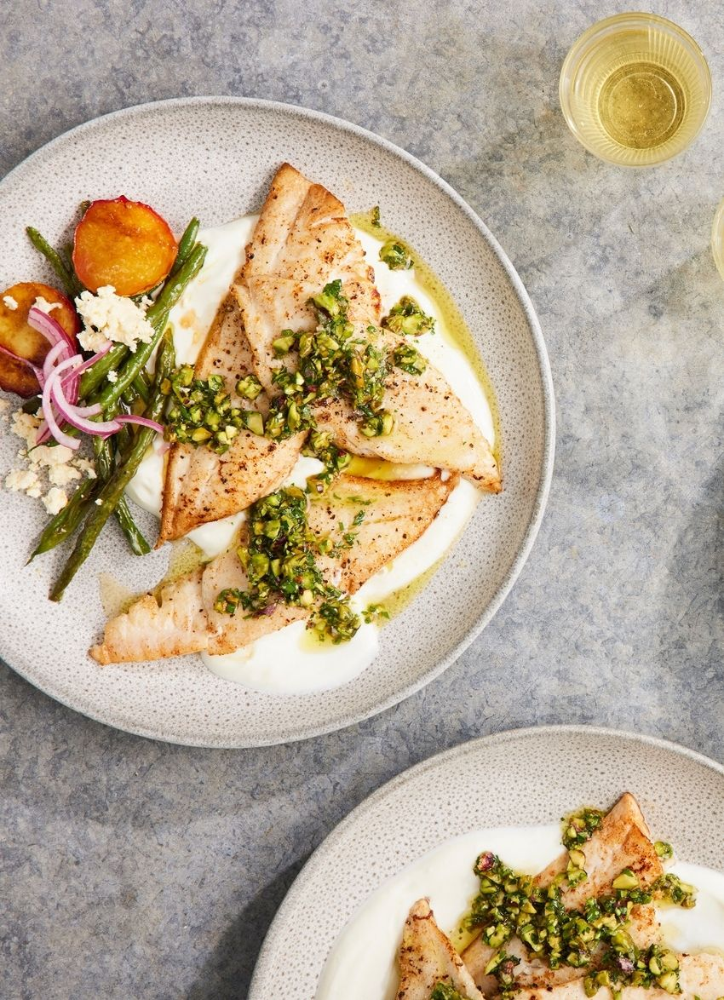

Fish Lime Salsa

Fish Lime Salsa
The zing of lime, aromatic herbs and chewy pistachios make this a winning salsa that can be used in multiple dishes. Try it with lamb, grilled haloumi, feta and chicken or
over barbecued vegetables.
INGREDIENTS
- PISTACHIO SALSA.
- 2 tablespoons olive oil.
- 1 teaspoon honey.
- 2 cloves garlic, crushed.
- finely grated zest 1 lime.
- 2 tablespoons lime juice.
- 1 teaspoon sea salt.
- ½ cup pistachios, roughly chopped.
- ¼ cup packed parsley, finely chopped.
- 2 tablespoons finely chopped oregano.
STEPS(PREPARATION)
- pistachio Salsa: Whisk all the ingredients except the pistachios and herbs together in a bowl. Stir in the pistachios and herbs just before serving.
- To cook and serve: Season the fish on both sides. Heat a little oil in a large frying pan over a medium-high heat and add a knob of butter. When sizzling, cook the fish until golden on both sides and just cooked through. Do this in batches if needed.
- Divide the yoghurt between plates and spread with the back of a spoon. Top with the fish and spoon over the salsa.